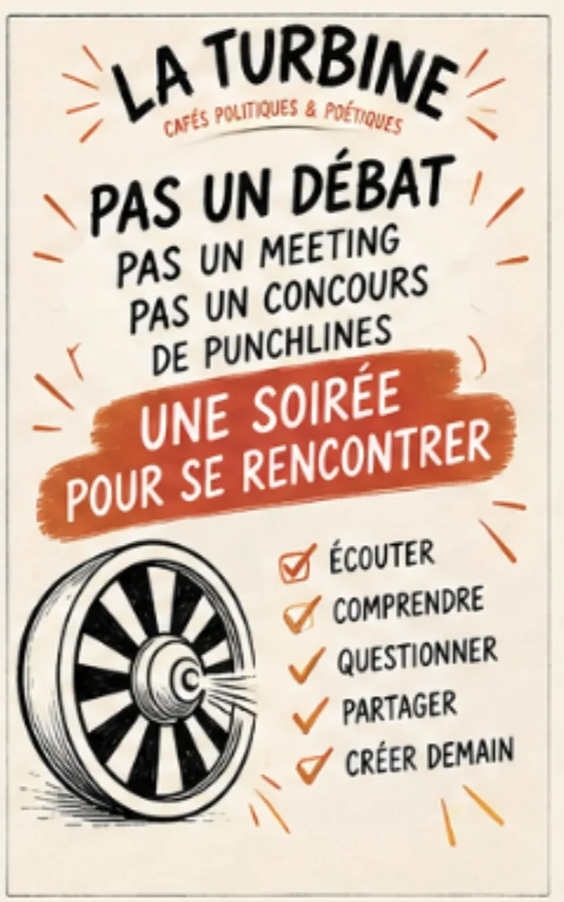
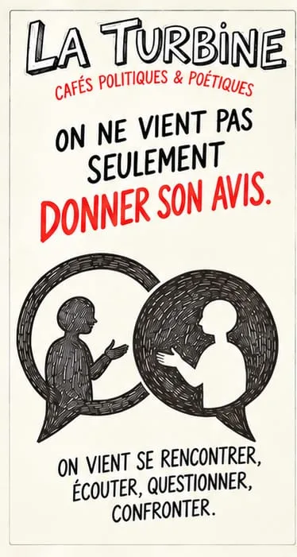
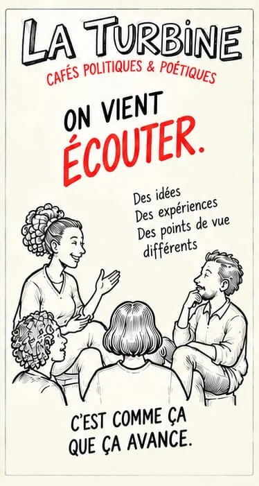
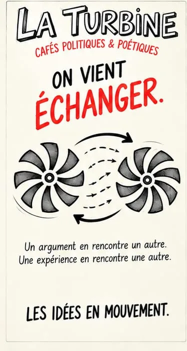
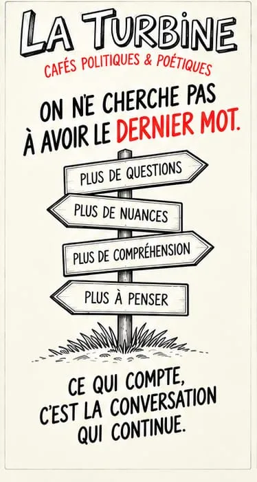

La Turbine, cafés politiques & poétiques à Montauban
On vient écouter. Échanger. Questionner.
Un café où l’on parle de politique et de société sans meeting, sans punchlines et sans dernier mot.
Pas besoin d’être d’accord. Venez avec vos idées. Et surtout, avec vos oreilles.
 Jeudi 19 novembre · 19h
Jeudi 19 novembre · 19h
Le prochain café
Ça va ? Peut-on aller bien dans un monde qui va mal ?
Qu’est-ce qu’aller bien ? Est-ce simplement une affaire personnelle ? Qu’est-ce qui, dans la société, nous fragilise ? Des solutions individuelles… ou collectives ?
- Jeudi 19 novembre 202619h – 21h30
- Le Génie12 rue du Génie, 82000 Montauban
- Entrée libreBoissons sans alcool, participation libre
Une soirée pour se rencontrer, pas pour gagner
Beaucoup de gens ont envie de parler de société, mais ne trouvent pas d’endroit où le faire sans se disputer ni se sentir jugés. La Turbine invente ce cadre : simple, chaleureux, ouvert à toutes et à tous.
On vient écouter
Des idées, des expériences, des points de vue différents. Une personne parle, les autres l’entendent jusqu’au bout.
On vient échanger
Un argument en rencontre un autre. Une expérience en rencontre une autre. Les idées sont en mouvement.
On vient questionner
Ce qu’on croyait savoir. Plus de questions, plus de nuances, plus de compréhension. Ce qui compte, c’est la conversation qui continue.
Voir le déroulé d’une soirée et la charte du débat · La mémoire de La Turbine
Pas un débat. Pas un meeting. Pas un concours de punchlines.
Une soirée pour se rencontrer, et repartir avec ce qu’on a compris, ce qui reste discuté et ce qu’on pourrait essayer.
- Écouter
- Comprendre
- Questionner
- Partager
- Créer demain

En quelques images




Rejoindre La Turbine
L’adhésion coûte 1 € par an. Elle n’est pas obligatoire pour venir : les cafés sont ouverts à tout le monde.